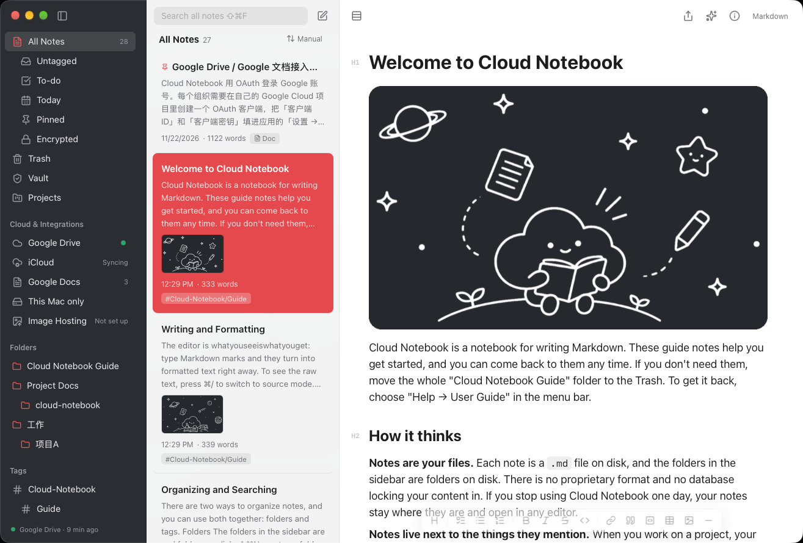
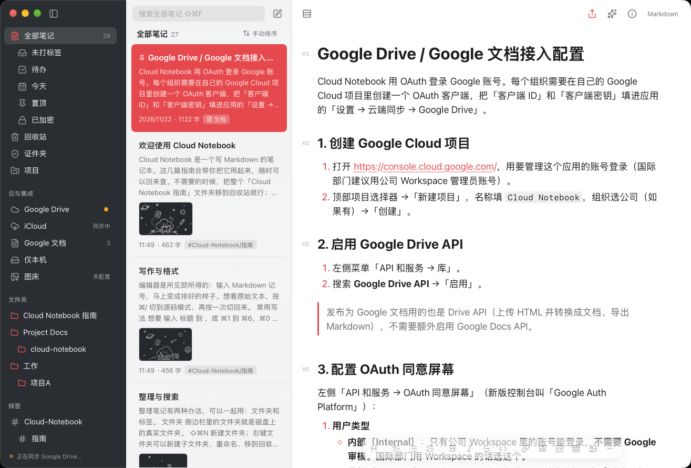

Notes are files
笔记就是文件
Each note is one .md file in a folder you pick. Stop using the app and your notes are still right there, readable by anything.
每篇笔记是你选定文件夹里的一个 .md 文件。哪天不用这个应用了，笔记还在原处，什么软件都能打开。
Cloud Notebook is a Markdown notebook for macOS. Notes are plain files on your disk. API keys sit beside them in an encrypted vault, and the plans your coding agent writes land in the right project.
Cloud Notebook 是 macOS 上的 Markdown 笔记本。笔记是磁盘上的普通文件；API Key 加密保存在旁边的证件夹里；AI 写代码时产生的方案和计划，自动归到对应的项目。


Working on a project means notes, secrets and a pile of documents. They belong in one place, on your own disk.
做一个项目，手里有笔记、有密钥、还有一堆文档。它们应该在同一个地方，在你自己的磁盘上。
Each note is one .md file in a folder you pick. Stop using the app and your notes are still right there, readable by anything.
每篇笔记是你选定文件夹里的一个 .md 文件。哪天不用这个应用了，笔记还在原处，什么软件都能打开。
Paste a key and the provider is recognized. Copy a project’s keys as .env. Get a reminder before anything expires. Encrypted on your Mac.
粘贴一个 Key 就能认出是哪家的。一键把项目里的密钥复制成 .env。到期之前提醒你。全部在本机加密。
Claude Code and Cursor save plans and designs into the project’s folder through the built-in MCP server, each marked current, draft, superseded or archived.
Claude Code、Cursor 通过内置的 MCP 服务把计划和方案存进项目文件夹，每份都标着：当前有效、草稿、已被取代或已归档。
These are small working models of what the app does. Nothing leaves this page.
下面是应用功能的小型可操作模型，不会向任何地方发送数据。
sk_live_••••4f2ask-ant-••••9c1dsk-proj-••••7b0eThe MCP server ships inside the app. The agent can only reach the documents of the project it is working in, never your other notes or the vault.
MCP 服务就在应用里。AI 只能访问它所在项目的文档，读不到你的其他笔记和证件夹。
Copy it from Settings, Project Docs.
在「设置 → 项目文档」里复制。
claude mcp add --scope user cloud-notebook -- "/Applications/Cloud Notebook.app/Contents/MacOS/app" mcp
When the agent writes a plan or a design, it saves it into the folder of the repository you are in. Ask it to tidy up the Markdown files already scattered around and it imports those too.
AI 写出计划或方案时，会存进你当前仓库对应的文件夹。让它整理一下已经散落的 Markdown 文件，它也会一并导入。
A new document marks the one it replaces as superseded. Old versions fold away, and every change is kept in the history.
新文档会把它取代的那份标成“已被取代”。旧文档自动收起，每次修改都留在历史里。
Nowhere, until you turn something on. Each connection goes straight from your Mac to the service you chose.
默认哪里都不去。每一项都要你自己打开，数据从你的 Mac 直接发给你选的服务。
| Feature功能 | What is sent发送什么 | To发给谁 |
|---|---|---|
| Sync同步 | Your note files笔记文件 | Your own iCloud Drive or Google Drive你自己的 iCloud Drive 或 Google Drive |
| AI assistantAI 助手 | Your question and the passages it needs你的问题和回答它需要的片段 | The provider whose API key you entered你填了 API Key 的那家服务商 |
| Coding agentAI 编程工具 | Project documents, on this Mac项目文档，在本机读写 | The agent you connected你接入的那个工具 |
| Image hosting图床 | Images you choose to upload你选择上传的图片 | Your own S3-compatible storage你自己的 S3 兼容存储 |
| Update check检查更新 | An ordinary request, no note content一个普通请求，不带笔记内容 | GitHub; can be turned offGitHub，可以关闭 |
| Analytics统计 | None. There is no analytics or tracking code.没有。应用里没有任何统计或追踪代码。 | |
Signing in with Google is optional and is used for one thing: syncing your notes between your devices through your own Google Drive.
Google 登录是可选的，只用于通过你自己的 Google Drive 在设备之间同步笔记。
drive.file permission. It can only see and change files that Cloud Notebook itself created in your Drive. It cannot read your other files.drive.file 权限，只能查看和修改它自己在你的 Drive 里创建的文件，读不到其他文件。Signed and notarized. The app updates itself when a new version is out.
安装包已签名并通过 Apple 公证。有新版本时应用会自己更新。